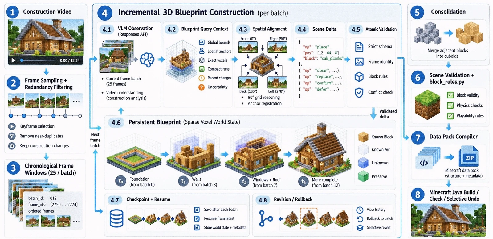

LLM Agents
From long-horizon reasoning to tools, recovery, and execution in the real world.
Welcome to the homepage of
Quaerendo invenietis.
An AI undergraduate at Shanghai Jiao Tong University, currently focusing on LLM agents, multi-agent systems and model collaboration.
Understanding intelligence, in theory and in practice.
I am an undergraduate student in Artificial Intelligence at Shanghai Jiao Tong University, working on language-model systems with a primary focus on LLM agents, multi-agent systems, and model collaboration.
My research interests center on building capable and adaptive agent systems that can reason, coordinate, and act in complex environments. Recent work spans autonomous agent systems, hierarchical planning and recovery, cross-device interaction, continual learning, and efficient adaptation of large language models.
From long-horizon reasoning to tools, recovery, and execution in the real world.
How agents, models, and devices coordinate to solve problems together.
How training reshapes model capabilities—and how to extend them without losing what already works.
Zhiyuan Honor Scholarship, Zhiyuan College, Shanghai Jiao Tong University
Merit Student, Shanghai Jiao Tong University, 2025–2026
Merit Student, Shanghai Jiao Tong University, 2024–2025
Outstanding League Member, Shanghai Jiao Tong University
Loading timeline…




Stateful cross-device orchestration that combines local modality refinement with execution-feedback-driven plan and device reassignment.
Replay-free continual learning with chain-updated task vectors, adaptive SVD merging, and geometric separation of shared and task-specific knowledge.
Joint training can make communication fragile. SICT aligns receiver actions across equivalent messages to improve robustness.
Reveals individual capability loss masked by teammate compensation. RACP selectively rehearses at-risk skills while preserving team utility.